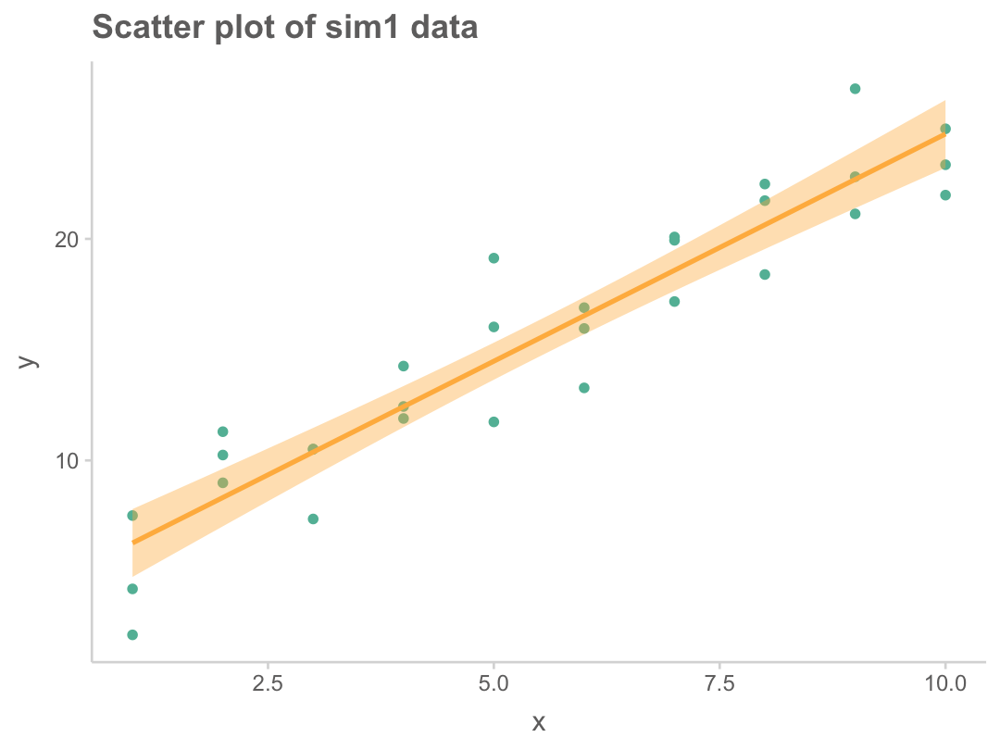
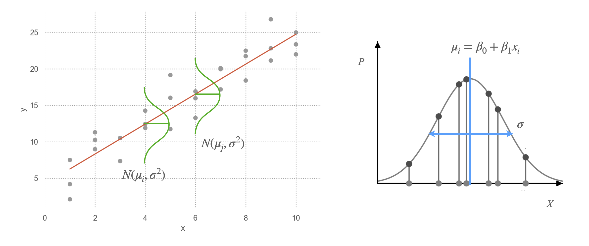
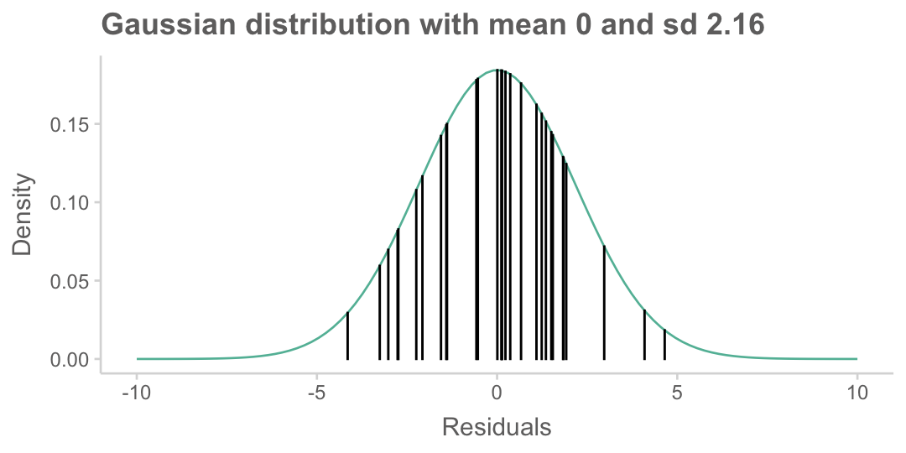

Load libraries
library(haven)
library(psych)
library(tidyverse)
library(lavaan)
library(semTools)
library(manymome)Mixed
library(haven)
library(psych)
library(tidyverse)
library(lavaan)
library(semTools)
library(manymome)sim1 <- read_csv("data/sim1.csv")
sim1 |> print(n = 5)# A tibble: 30 x 2
x y
<dbl> <dbl>
1 1 4.20
2 1 7.51
3 1 2.13
4 2 8.99
5 2 10.2
# i 25 more rowssim1 |>
ggplot(aes(x = x, y = y)) +
geom_point() +
geom_smooth(method = "lm") +
labs(title = "Scatter plot of sim1 data")
선형 모델 family인 \(\hat{y} = b_0 + b_1 x\)을 세운 후
잔차 \(e_i = y_i - \hat{y_i}\)의 제곱의 합, 즉 \(\sum e_i^2\)이 최소가 되도록하는 \(b_0, b_1\)을 추정하는 방법
mod <- lm(y ~ x, data = sim1)
mod |> coef() |> print()(Intercept) x
4.220822 2.051533 즉, OLS 방식에서 최선의 모형은 \(\hat{y} = 4.22 + 2.05x\)
이 모형의 예측값과 잔차를 보면,
library(modelr)
sim1 <- sim1 |>
add_predictions(mod) |>
add_residuals(mod)
sim1 |> print(n = 7)# A tibble: 30 x 4
x y pred resid
<dbl> <dbl> <dbl> <dbl>
1 1 4.20 6.27 -2.07
2 1 7.51 6.27 1.24
3 1 2.13 6.27 -4.15
4 2 8.99 8.32 0.665
5 2 10.2 8.32 1.92
6 2 11.3 8.32 2.97
7 3 7.36 10.4 -3.02
# i 23 more rows데이터가 발생된 것으로 가정하는 분포를 고려했을 때,
어떨때 주어진 데이터가 관측될 확률/가능도(likelihood)가 최대가 되겠는가로 접근하는 방식으로,
X, Y의 관계와 확률분포를 함께 고려함.

Likelihood \(L = \displaystyle\prod_{i=1}^{n}{P_i}\) (관측치들 독립일 때, product rule에 의해)
분포가 Gaussian이라면(평균: \(\mu\), 표준편차: \(\sigma\)), 즉 \(f(t) = \displaystyle\frac{1}{\sqrt{2\pi\sigma^2}}exp\left(-\frac{(t-\mu)^2}{2\sigma^2}\right)\)라면
\(L = \displaystyle\prod_{i=1}^{n}{f(y_i, x_i)} = \displaystyle\prod_{i=1}^{n}{\frac{1}{\sqrt{2\pi\sigma^2}}exp\left(-\frac{(y_i - (\beta_0 + \beta_1x_i))^2}{2\sigma^2}\right)}\)
이 때, 이 likelihood를 최대화하는 \(\beta_0, \beta_1, \sigma\)를 찾는 것이 목표이며,
이처럼 분포가 Gaussian라면, OLS estimation과 동일한 값을 얻음. (단, \(\sigma\)는 bias가 존재)
다른 분포를 가지더라도 동일하게 적용할 수 있음!
즉, likelihood의 관점에서 주어진 데이터에 가장 근접하도록(likelihood가 최대가 되는) “분포의 구조”를 얻는 과정
여러 편의를 위해, log likelihood를 최대화함.
다음 두가지를 고려하면,
\(log(x*y) = log(x) + log(y)\)
\(e^x * e^y = e^{x+y}\)
\(log(L) = \displaystyle\sum_{i=1}^{n}{log\left(\frac{1}{\sqrt{2\pi\sigma^2}}exp\left(-\frac{(y_i - (\beta_0 + \beta_1x_i))^2}{2\sigma^2}\right)\right)} = \displaystyle\sum_{i=1}^{n}{-log(\sqrt{2\pi\sigma^2}) - \frac{(y_i - (\beta_0 + \beta_1x_i))^2}{2\sigma^2}}\)
두 번째 항이 앞서 정의한 squared error와 동일함
잔차에 대한 간단한 정보들
lm(y ~ x, data = sim1) |> summary() |> print()
Call:
lm(formula = y ~ x, data = sim1)
Residuals:
Min 1Q Median 3Q Max
-4.1469 -1.5197 0.1331 1.4670 4.6516
Coefficients:
Estimate Std. Error t value Pr(>|t|)
(Intercept) 4.2208 0.8688 4.858 4.09e-05 ***
x 2.0515 0.1400 14.651 1.17e-14 ***
---
Signif. codes: 0 '***' 0.001 '**' 0.01 '*' 0.05 '.' 0.1 ' ' 1
Residual standard error: 2.203 on 28 degrees of freedom
Multiple R-squared: 0.8846, Adjusted R-squared: 0.8805
F-statistic: 214.7 on 1 and 28 DF, p-value: 1.173e-14
# 위의 모형의 잔차들에 대해 정규분포 함수의 값을 구하면,
sigma <- sd(sim1$resid) # 잔차의 표준편차: 2.16
# 좀 더 정확히는 샘플 수로 나누지 않고, 자유도로 나누어야 함
sim1 <- sim1 |>
mutate(norm = dnorm(resid, mean = 0, sd = sigma))
sim1 |> print(n = 5)# A tibble: 30 x 5
x y pred resid norm
<dbl> <dbl> <dbl> <dbl> <dbl>
1 1 4.20 6.27 -2.07 0.117
2 1 7.51 6.27 1.24 0.156
3 1 2.13 6.27 -4.15 0.0294
4 2 8.99 8.32 0.665 0.176
5 2 10.2 8.32 1.92 0.124
# i 25 more rowsx <- seq(-10, 10, length = 100)
y <- dnorm(x, mean = 0, sd = sigma)
tibble(x = x, y = y) |>
ggplot(aes(x = x, y = y)) +
geom_line() +
labs(
title = "Gaussian distribution with mean 0 and sd 2.16",
x = "Residuals", y = "Density"
) +
geom_bar(data = sim1, aes(x = resid, y = norm), stat = "identity", color = "black")
즉, 위 그림에서 높이를 모두 곱하면, likelihood를 얻을 수 있으며,
Log-likelihood는 log를 취해 더하면 되므로,
log(sim1$norm) |> sum() |> print()[1] -65.2347이 값은 lavaan 결과에서 보여지며, 모형 적합도 계산을 위한 기본적인 값으로 사용됨.
fit <- sem('y ~ x', data = sim1)
summary(fit, fit.measures = TRUE) |> print()lavaan 0.6-18 ended normally after 1 iteration
Estimator ML
Optimization method NLMINB
Number of model parameters 2
Number of observations 30
Model Test User Model:
Test statistic 0.000
Degrees of freedom 0
Model Test Baseline Model:
Test statistic 64.784
Degrees of freedom 1
P-value 0.000
User Model versus Baseline Model:
Comparative Fit Index (CFI) 1.000
Tucker-Lewis Index (TLI) 1.000
Loglikelihood and Information Criteria:
Loglikelihood user model (H0) -65.226
Loglikelihood unrestricted model (H1) -65.226
Akaike (AIC) 134.452
Bayesian (BIC) 137.255
Sample-size adjusted Bayesian (SABIC) 131.028
Root Mean Square Error of Approximation:
RMSEA 0.000
90 Percent confidence interval - lower 0.000
90 Percent confidence interval - upper 0.000
P-value H_0: RMSEA <= 0.050 NA
P-value H_0: RMSEA >= 0.080 NA
Standardized Root Mean Square Residual:
SRMR 0.000
Parameter Estimates:
Standard errors Standard
Information Expected
Information saturated (h1) model Structured
Regressions:
Estimate Std.Err z-value P(>|z|)
y ~
x 2.052 0.135 15.166 0.000
Variances:
Estimate Std.Err z-value P(>|z|)
.y 4.529 1.169 3.873 0.000
Maximum likelihood estimation의 결과는 분포가 Gaussian이라면 OLS와 동일하며,
다른 분포를 가지는 데이터에 대해서도 동일한 원리로 (즉, likelihood를 최대로 하도록) 파라미터를 추정할 수 있음.
대표적인 예가 logistic regression이며, 이 경우의 분포는 이항분포 또는 베르누이 분포를 가정하여 likelihood를 계산함.
관찰된 변수(measured variable)들이 multivariate normal distribution을 따른다는 가정을 함.
이 때, 각 변수들은 정규분포를 따르게 되지만, 그 반대는 아님.
Source: p. 150, Introduction to Statistical Learning with Applications in Python by G. James, D. Witten, T. Hastie, R. Tibshirani
Multivariate Gaussian 분포: \(\displaystyle f(\mathbf{x}) = \frac{1}{(2\pi)^{p/2}|\Sigma|^{1/2}} \exp\left(-\frac{1}{2}(\mathbf{x}-\mu)^T\Sigma^{-1}(\mathbf{x}-\mu)\right)\)
각 잠재변수(latent variable)들은 정규분포를 따른다고 가정
분포 뿐만 아니라 회귀에서의 모든 가정들이 SEM에서 동일하게 적용됨!
{kind=link}